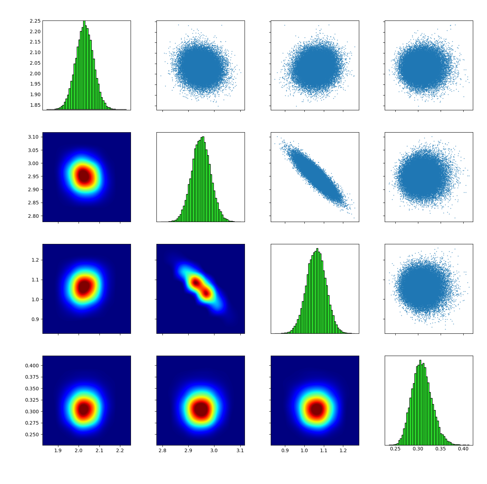
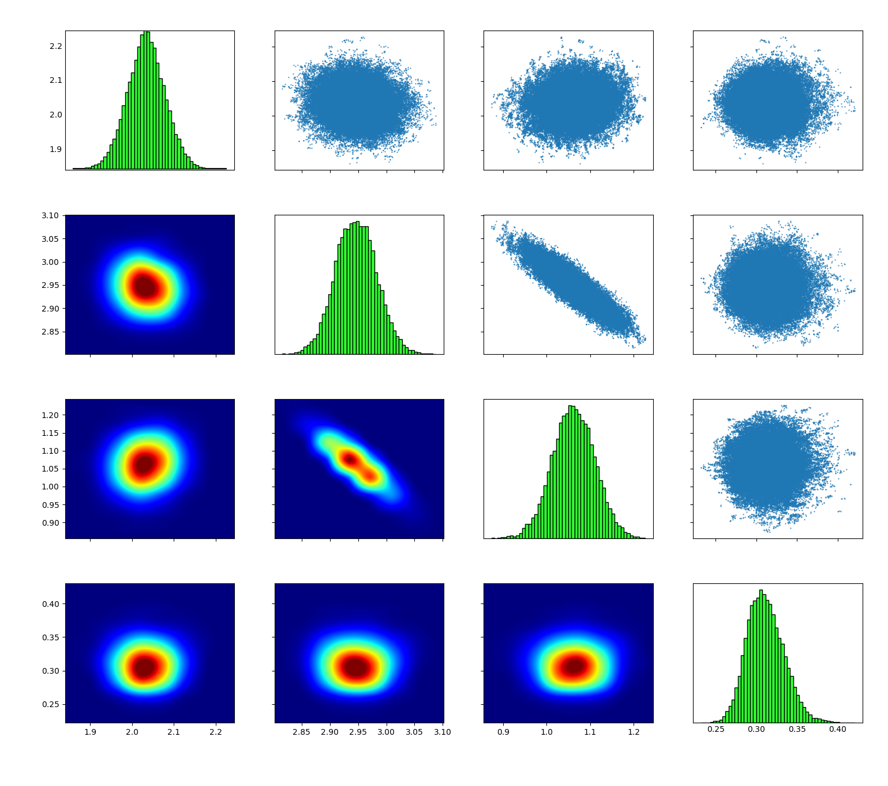

Sampling a posterior distribution
In this example we will show how to sample the posterior distribution in an uncertainty quantification problem. First, we will create synthetic data using the model,
We fix \varphi^* = (2,3,1) and create 100 data point using the equation,
where x_i = 0.02 i,\; i=1,\ldots,100 and \sigma=0.3. We will sample the posterior distribution of \vartheta=(\varphi,\sigma) conditioned on the data d. The prior distribution is uniform for each parameter,
and the likelihood function in given by,
Sampling with TMCMC
Compile and run
From the base folder run
cd build
make tmcmc_theta_internal
Make sure that use_torc=0 and use_omp=0 in the Makefile since we don't want to run parallel in this example. Go back to the the base folder and run
cd ../examples/sampling/internal/tmcmc/ ./setup_tmcmc.sh cd runs/run_001/
Run the TMCMC sampling algorithm:
./tmcmc_theta_internal
Finally, visualize the samples:
cp ../../../../../../source/tools/display/plotmatrix_hist.py . ./plotmatrix_hist.py final.txt

Behind the scripts
Sampling with DRAM
Compile and run
From the base folder run
cd build
make dram_theta_internal
Make sure that use_torc=0 and use_omp=0 in the Makefile since we don't want to run parallel in this example. Go back to the the base folder and run
cd ../examples/sampling/internal/dram/ ./setup_dram.sh cd runs/run_001/
Run the TMCMC sampling algorithm:
./tmcmc_dram_internal
Finally, visualize the samples:
cp ../../../../../../source/tools/display/plotmatrix_hist.py . tail -n +1000 chain.txt > tmp ./plotmatrix_hist.py tmp
With this command tail -n +1000 chain.txt we discard the first 1000 samples which we consider as the burn-in period.
